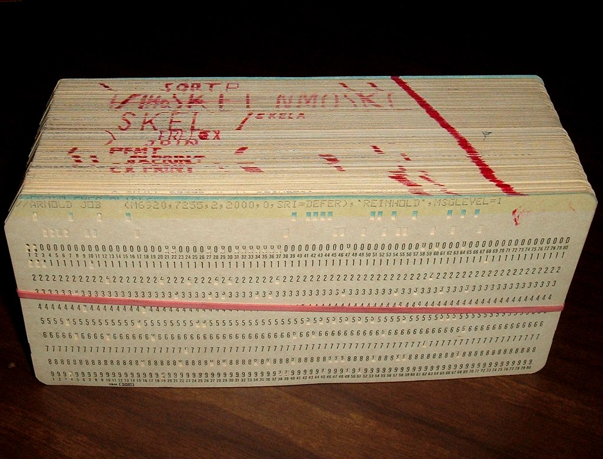

Async history
In the start computers had one CPU and it executed a set of instructions written by a programmer one by one. No scheduling, no threads, no multitasking. This was how computers worked for a long time. We're talking back when the days where a program looked like this:

There were operating systems being researched though and when personal computing started to grow in the 80's we had operating systems like DOS. They usually yielded control of the entire CPU to the program currently executing and it was up to the programmer to make things work and implement any kind of multitasking for their program. This worked fine, but as interactive UIs using a mouse and windowed operating systems became the norm, this simply couldn't work anymore.
Non-preemptive multitasking
The method used to be able to keep the UI interactive and running background
processes, was accomplished by non-preemtive multitasking. This kind of
multitasking put the responsibility of letting the OS run other tasks like
responding to input from the mouse, or running a background task in the hands of
the programmer. Typically the programmer yielded control to the OS.
Beside off loading a huge responsibility to every programmer writing a program for your platform, this was also error prone. A small mistake in a programs code could halt or crash the entire system. If you remember Windows 95, you also remember the times when a window hung and you could paint the entire screen with it (almost the same way as the end in Solitare, the card game that came with Windows). This was reportedly a typical error in the code that was supposed to yield control to the operating system.
If you're not sure about what this kind of threaded multitasking is I wrote about recommend my previous book that explains this part of multitasking pretty well. You'll know everything you need about threads, contexts, stacks and scheduling for following along.
Preemtive multitasking
While non-preemtive multitasking sounded like a good idea, it turned out to create serious problems as well. I will not list them here but as you can imagine, letting every program and programmer out there be responsible for parts of the scheduling of tasks in an operating system will be chaos and ultimately lead to a bad user experience.
The solution was to place the responsibility of scheduling the CPU resources between the programs that requested it (including to OS itself) in the hands of the OS. The OS can stop execution of a process, do something else, and switch back.
In a single core machine you can visualize this as running a program you wrote, and the OS stops to update the mouse position, and switches back to your program. This can happen many times each second, not only to keep the UI responsive but it can also give some time to other background tasks and IO events.
This is now the prevailing way to design an operating system.
Hyperthreading
As CPU's evolved and added more functionality like several ALUs (Algorithmic Logical Unit) and more logical units in general, the CPU manufacturers realized that the entire CPU was never utilitized fully. For example when an operation only required some parts of the CPU, an instruction could be run on the ALU simultaneously. This became the start of Hyperthreading.
You see, on your computer today that it has i.e. 6 cores, and 12 logical cores. This is exactly where Hyperthreading comes in. It "simulates" two cores on the same core by using unused parts of the CPU to drive progress on thread "2" simultaneously as it's running the code on thread "1". It does this by using a number of smart tricks (like the one with the ALU).
Now we could actually offload some work on one thread while keeping the UI interactive by responding to events in the second thread even though we only had one CPU core.
You might wonder about the performance of Hyper Threading?
It turns out that Hyperthreading has been continuously improved since the 90's. Since you're not actually running two CPU's there will be some operations that need to wait for each other to finish. The performance gain of hyperthreading compared to multithreading in a single core seems to be somewhere close to 30 % but it largely depends in the workload.
Multicore processors
As most know, the clock frequency of processors has been flat for a long time. Processors get faster by improving caches, branch prediction, speculative execution and working on the processing pipelines of the processors, but the gains seems to be diminishing.
On the other hand, new processors are so small they allow us to have many on the same chip instead. Now most CPUs have many cores, including hyperthreading.
So how synchronous is the code you write, really ?
As many things this depends on your perspective. From the perspective of your process and the code you write for it, everything will normally happen in the order you write it.
From the OS perspective it might, or might not, interrupt your code, pause it and run some other code in the meantime before resuming your process.
From the perspective of the CPU it will mostly execute instructions one at a time[1]. They don't care who wrote the code though so when a hardware interrupt happens, they will immediately stop and give control to an interrupt handler. This is how the CPU handles concurrency.
[1] However, modern CPU can also do a lot if things in parallel. Most CPUs are pipelined, meaning that the next instruction is loaded while the current is executing. It might have a branch predictor that tries to figure out what instructions to load next. The processor can also reorder instructions by using "out of order execution" if it believes it makes things faster this way without "asking" or "telling" the programmer or the OS so you might not have any guarantee that A happens before B. The CPU offloads some work to separate "coprocessors" like the FPU for for floating point calculations leaving the main CPU ready to do other tasks et cetera.
As a high level overview, it's OK to model the CPU as operating in a synchronous manner, but lets for now just make a mental note that this is a model with some caveats that becomes especially important when talking about parallelism, synchronization primitives like mutexes and atomics and security.